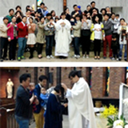
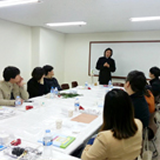
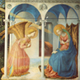
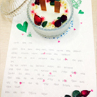

임신 소식은 많은 엄마 아빠에게 기쁜 소식이기도 하지만 한편으로는 조심스럽고 당황스러울 수 있습니다. 얼굴은 볼 수 없지만 분명 살아 숨 쉬는 아기의 존재를 받아들이고 교감을 이뤄나가는 과정은 낯설기만 합니다. 그런 과정을 안내해 주고 도움을 주는 것이 바로 태교입니다. 오늘날 많은 연구와 논문에서는 태교의 중요성을 과학적으로 증명하고 있으며, 유아부에서도 조기 신앙교육의 중요성과 필요성을 인지하여 그동안 연구모임을 활발히 진행하였습니다.
그렇다면 어떻게 태교하는 것이 좋을까요?
자녀에게 가장 좋은 것을 주고 싶은 것이 부모 마음입니다.
신앙인에게 가장 좋고 또 중요한 것은 신앙입니다. 그 신앙을 물려주는 것은 부모에게 기쁨인 동시에 의무이기도 합니다. 하느님의 사랑은 우선적으로 부모를 통해 태아에게 전달됩니다. 아이가 수태되어 생명의 신비를 느끼는 그 순간부터 신앙교육은 시작되어야 합니다. 서울대교구 청소년국 유아부에서는 잉태된 아기와 어떻게 교감을 나누며 신앙인으로서 부모의 자세를 어떻게 준비해야 하는지 도움을 주고자 임신부 태교 프로그램을 제작하게 되었습니다. 임신부 태교 프로그램을 통해 뱃속의 태아가 교회의 적극적인 관심과 사랑을 받고 하느님의 자녀로서 성장할 수 있도록 지원하고자 합니다.
임신부 태교 프로그램 맛보기

청담동 성당
임신부 축복미사
프로그램에 들어가기에 앞서 임신부와 태아,
또 그 가정을 축복해주는 미사입니다. 임신부 가정과 태아에게 건강과 축복이 가득하기를 기도합니다.

당산동 성당
하느님과 함께 하는 태교
아기는 하느님이 주신 선물입니다.
하느님의 말씀 안에서 우리 아기가 어떻게 우리에게 왔는지 알고 묵상해보아요.

성화를 통한 태교
엄마가 그림을 보며 느끼는 다양한 감정은 태아의 뇌에 영향을 미칩니다.
예수님의 일생, 기적, 예수님의 생활이 담긴 성화를 보며 기도하는 마음으로 태교해 보세요.

우리아기 기도초 만들기
아기를 기다리며, 아기가 태어난 후에 함께 기도할 수 있는 기도초 만들기입니다.
우리 가정만의 예쁜 기도초를 만들어 보세요.
임신부 태교 프로그램 본당 개설 절차
1. '임신부 태교 프로그램' 안내
주임신부님 또는 본당의 사목위원이 임신부 태교 프로그램에 관심을 갖고 안내를 받습니다.
2. 봉사자 모집
본당에서 자체적으로 '임신부 태교 프로그램'을 운영할 봉사자를 모집합니다.
3. 신청서 제출
프로그램 운영 준비가 된 본당은 신청서를 작성하여 유아부에 제출합니다.
4. 봉사자 교육
청소년국 유아부에서 실행하는 봉사자 교육을 받습니다. (첫 프로그램 시행 시 1학기 간은 교육을 받으며 프로그램을 진행합니다.)
5. 일정 계획 및 임신부 모집
봉사자 교육내용을 토대로 프로그램 운영 일정을 계획하고 이를 바탕으로 주보공지 및 기타 홍보를 통해 프로그램에 참여할 임신부를 모집합니다.
6. 임신부 태교 프로그램 시행
계획안 일정대로 모집된 임신부를 대상으로 프로그램을 진행합니다.
문의 : 02-727-2115